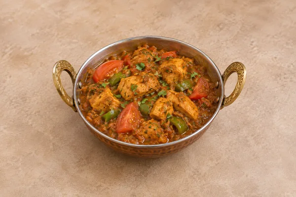

Chicken Karahi
Base gravy must already be prepared, diluted and hot before measuring. The time below includes preparing fresh chicken, but excludes making base gravy and any rice or naan. Cook larger quantities in batches.
Curries
Chicken breast with scorched onion, peppers, green chilli and a thick tomato curry sauce.
Estimated total: About 40 min totalBase gravy must already be prepared, diluted and hot before measuring. The time below includes preparing fresh chicken, but excludes making base gravy and any rice or naan. Cook larger quantities in batches.
Ingredient quantities update automatically

The ingredient weights are the cooking quantities. The shopping list rounds whole produce up for buying where appropriate.
Cool promptly and refrigerate covered within 2 hours. Use within 48 hours, or sooner if the base gravy has an earlier storage limit.
Freeze portions for later reheating only when made with freshly cooked chicken and freshly made gravy in this cooking session. Otherwise freeze the gravy separately before finishing the curry. Defrost fully in the fridge and use within 24 hours.
Reheat once until steaming hot throughout. If chilled chicken or gravy was already reheated when making this curry, do not reheat the finished curry again.
For a milder curry, halve the fresh chillies and chilli powder. Use ordinary tomato purée diluted as listed, not four tablespoons of concentrated purée.
Cool cooked leftovers in small portions and refrigerate within 2 hours. Keep the fridge at 0–5°C and the freezer around −18°C. Freeze suitable leftovers promptly. Defrost fully in the fridge and use within 24 hours. Reheat only once, until steaming hot all the way through. Follow any shorter use-by or opened-pack instructions; using older cooked ingredients does not restart their storage time.
Food-safety guidance: Food Standards Agency: chilling and freezing · reheating leftovers.

Base gravy must already be prepared, diluted and hot before measuring. The time below includes preparing fresh chicken, but excludes making base gravy and any rice or naan. Cook larger quantities in batches.

Base gravy must already be prepared, diluted and hot before measuring. The time below includes preparing fresh chicken, but excludes making base gravy and any rice or naan. Cook larger quantities in batches.

Base gravy must already be prepared, diluted and hot before measuring. The time below includes preparing fresh chicken, but excludes making base gravy and any rice or naan. Cook larger quantities in batches.